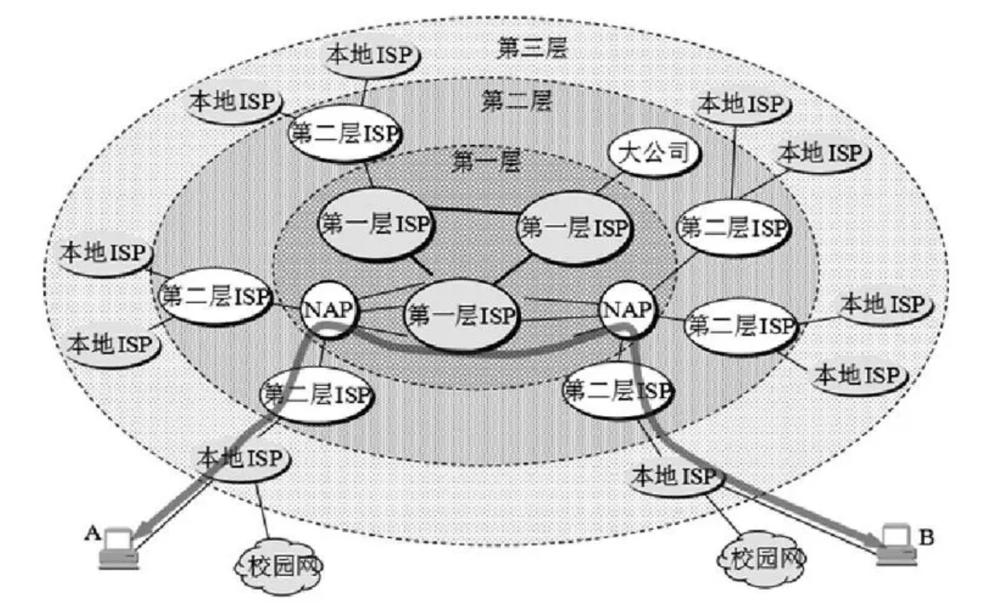
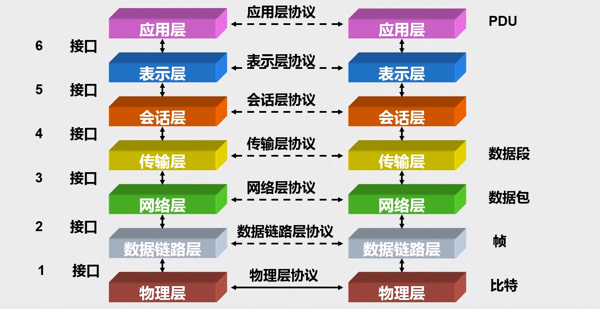
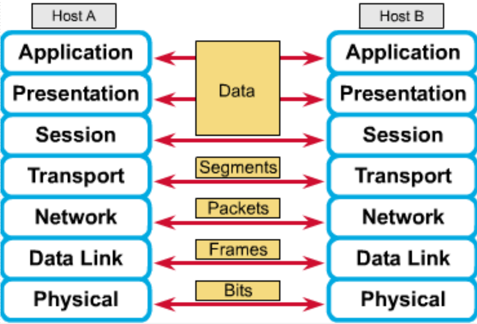
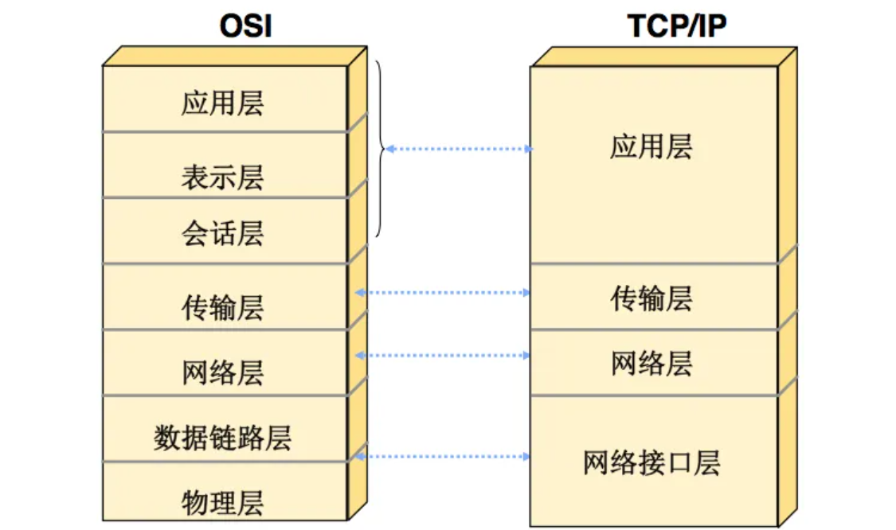
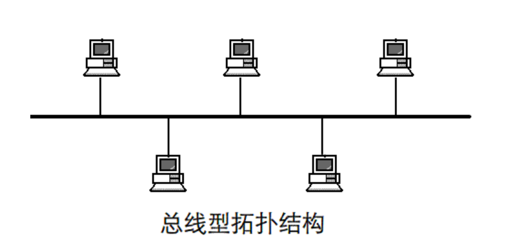
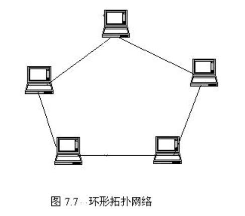
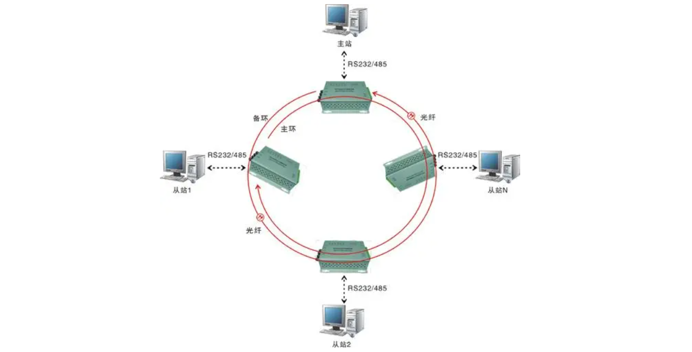
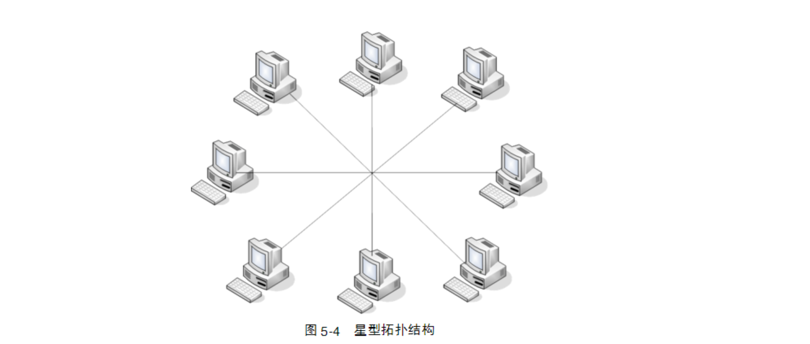
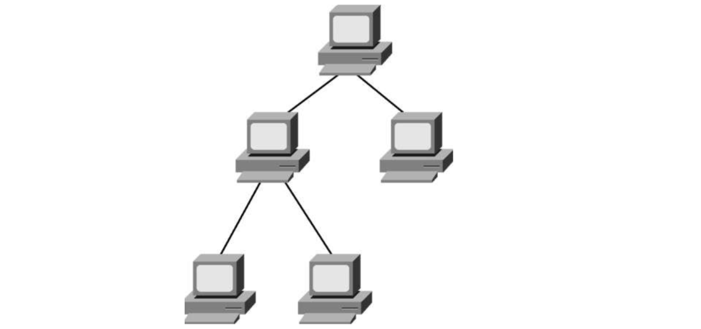
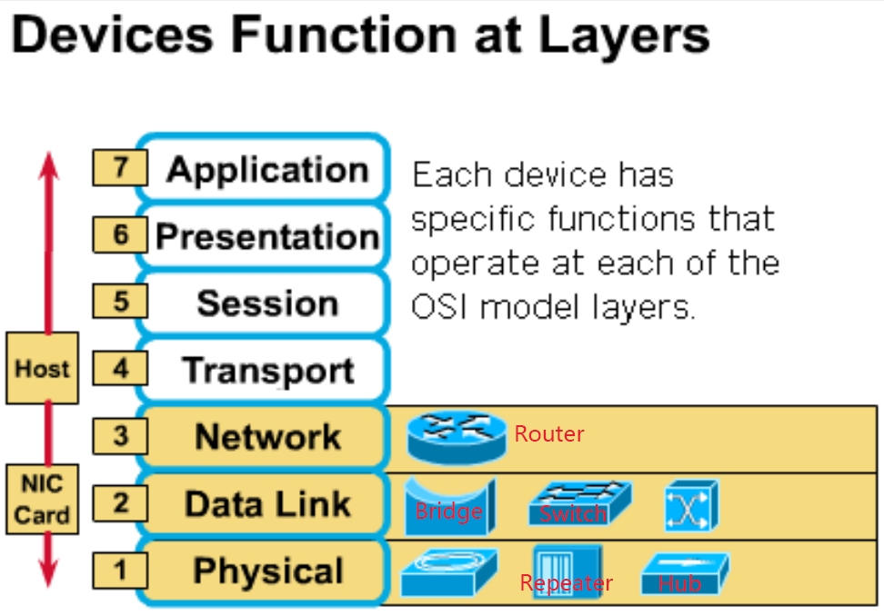

计算机网络及其参考模型

概述
网络是一个相互连接的系统，其终端可以包括物体，仪器和人；如果仪器特指计算机，则发展为计算机网络，传输01位串的数据，可以共享任何资源。计算机网络中的每一个设备都可以称为节点，节点之间的连接则是通过链路来完成
局域网LAN( Local Area Network )
- 在本地运作，覆盖相对较小的区域
- 多用户同时复用同一链路介质，与其常用广播通信的性质对应（Multi-user Access）
- 局部统一管理，网络性能好，网速快，出错率低
广域网WAN( Wide Area Network )
- 在更广泛的区域内运作
- 通过串行链路，光学链路接入
- 一般网速较慢，出错率不易控制
局域网设备
集线器
Hub，第一层设备，也称为多端口中继器(Multi-port repeater)，可以连接多个PC并中继信号
网桥
Bridge，第二层设备，基于上网设备的MAC地址进行局域网的分段处理
交换机
Switch，第二层设备（有的现代交换机也具备第三层的设备的功能），也称为多端口网桥(Multi-port bridge)，基于集成电路实现，每个端口都能提供充分的带宽(bandwidth)
路由器
Router，第三层设备，基于逻辑的IP地址划分选择路径并转发报文
广域网设备
路由器
Router，功能与LAN中的路由器相似，但路径选择的功能更加复杂
调制解调器
Model，终端设备，具有通道服务单元(CSU)和数据服务单元(DSU)，进行模拟信道到数字信道的转换
局域网服务与广域网服务
- 局域网服务较为单一，但也是最知名的服务：以太网服务(Ethernet)
- 广域网则具有多种服务方式，例如Modem，ISDN，DSL等，本科阶段不做深究
因特网(Internet)概述与ISP分层模型
因特网是最大的开放互联计算机网络，全球各地的用户通过因特网服务提供商 (Internet Service Providers, ISP) 接入到因特网

其中第一层ISP也被称为核心层，负责远距离连通；NAP是核心层与第二层ISP的接入点
ISP分层模型可以让大量流量本地化，减少核心层的压力
数据与数据包
数据在计算机网络中以01序列的形式进行传输，但01序列不是数据，序列加上数据解析标准才成为数据
数据包从物理上来看是便于连接双方相互理解组织起来的传输数据的媒介，是一种数据结构；从逻辑上来看则是传输数据被拆分成多个更小，更易传输的数据单元
在不同的层次下因其传输标准不同，数据包有不同的存在形式，例如在网络层下为包(packets)，链路层下为帧(frames)，将数据封装成这样的数据包的好处如下：
- 利于分时片处理报文
- 分组传输以此降低失误时的损失
- 每组数据可以选择最优路径单独传输
协议(Protocol)
协议是计算机网络通讯与传输的保障，通信双方使用同一协议即可实现正常通信
源与目的(Source & Destination)
出于网络的弱连接性（线路不具有专用性）考虑，报文中需要附带源与目的地址
传输介质(Media)
例如同轴电缆（分为粗缆和细缆），双绞线，光缆，空气与无线电波等
带宽(Bandwidth)
指传输介质的通信速度上限，单位是$bits/second(bps)$，是Byte做单位时的八倍
通量(Throughput)
传输介质的实际通信速度，一般来说小于带宽
OSI参考模型
概述
OSI(Open System Interconnection)参考模型是由ISO(国际标准化组织)提出，用于描述信息和数据如何在计算机之间传输的互联网模型，是一个分层模型，各层次完成各自特定的任务
分层模型

第一层为物理层(Physical)，解决二进制数据传输问题。关键词是信号与介质，规范了各种介质的规格和可传输信号以及接收终端的属性
第二层为数据链路层(Data Link)，解决介质访问问题。关键词是帧和介质访问控制，主要对数据格式、访问介质进行控制管理从而保证正确传输
第三层为网络层(Network)，解决路径选择问题。关键词是路径选择、路由与定位，主要进行基于路径选择建立两个节点之间的连接
第四层为传输层(Transport)，解决终端到终端的通讯问题。关键词是可靠性、流控制和错误检测，主要进行数据的分段传输，传输流量控制以及确保数据无差错
第五层为会话层(Session)，解决进程通讯时用户间的交流问题。关键词是会话，主要进行建立、管理和终止会话进程，并支持其上层的功能内容
第六层为表示层(Presentation)，解决通讯过程中表示标准的问题。关键词是数据一致表示，主要进行统一会话双方的数据格式规范
第七层为应用层(Application)，解决用户交互接口的问题。关键词是浏览器，主要进行会话内容的呈现
分层的作用
- 降低复杂度（简化教学）
- 利于分层接口的标准化处理
- 促进工程模块化
- 确保技术互联
- 加速技术进步
对等通信(Peer-to-peer Communication)
指的是在OSI参考模型中，两台终端设备之间只能在同等层次上进行通信交互，邻接层之间的交互通信只能在同一台终端设备上完成

应用层次(Application layers)
由于OSI参考模型的上三层（会话层、表示层与应用层）一起处理用户接口，数据格式化以及应用的接入，所以它们也合称应用层次
数据流层(Data flow layers)
而OSI参考模型的下四层（物理层、数据链路层、网络层与传输层）合作控制计算机网络中信息的物理传输，所以它们合称数据流层
TCP/IP参考模型
分层模型
TCP/IP参考模型与OSI参考模型有很强的对应关系，但它是只有四层的参考模型

如图所示，TCP/IP参考模型中的网络接口层对应于OSI参考模型中的下两层，即物理层与数据链路层
网络层和传输层分别对应于OSI参考模型的第三层和第四层，即网络层和传输层
应用层对应于OSI参考模型的应用层次，即上三层
这四层的功能也对应于它们所包含的OSI参考模型中各层次的对应功能
各层协议
 $\color{red}{TCP/IP参考模型与OSI模型比较}$
$\color{red}{TCP/IP参考模型与OSI模型比较}$
相似点：
- 都是分层模型
- 都有应用层、传输层和网络层
- 都是基于报文进行交换
不同点：
- TCP/IP参考模型更简洁，层数更少
- TCP/IP参考模型随因特网的发展而诞生的标准，它因其协议而知名并被广泛应用
- 一般网络并非完全按照OSI协议建造的，但OSI模型仍然被视为理论模型基础
网络技术
网络拓扑
分为物理层面和逻辑层面，物理层面指的是在外观上链路的连接形状与方式，而逻辑层面定义了主机访问传输介质的方式
总线拓扑(Bus)
物理层面上，每一台主机都连接在一根总线上，每两台主机之间均可进行通信，但总线故障会导致无法通信
逻辑层面上，一般不对总线拓扑做介质访问控制，并且其上的通信方式多为广播，因此两个节点如果同时向总线发送信号一定会引起冲突

环形拓扑(Ring)
物理层面上，通信信号只能沿同一方向传递，否则则会引起冲突，如果一根线出现故障则整个网络瘫痪
逻辑层面上，同一时间只能有一个节点发出信号（拓扑内主机发送信号需要令牌权限）

双环拓扑(Dual Ring)
相较于环形拓扑只是多了一条备用线路，提供灵活性和可靠性，功能特点与环形拓扑基本一致
一般来说只在外环链路故障时才使用内环链路

星型拓扑(Star)
物理层面上，所有节点通过中心节点连接转发通信，因此对于中心节点的负载较大，并且如果中心节点出现故障则会导致网络瘫痪
逻辑层面上，所有的报文信息都会经过中心节点，可以由中心节点进行控制

有的星型拓扑会延申出下级中心节点，称为扩展星型拓扑，这样在下一级内的通讯就可以由下级中心节点转发，降低中心节点负载，并且不至于因中心节点的故障导致整个网络瘫痪
层次结构/树形拓扑(Tree)
物理层面上，树形拓扑有明确的分层，可以看作只向一个方向延申的扩展星型拓扑
逻辑层面上，可以看出其报文是具有层次的传递转发，类似于审批与汇总的流程

网状拓扑(Mesh)
物理层面上，每一台主机之间均有链路连接，因此连通性最可靠，最不容易瘫痪，也是成本最高的拓扑，但被Internet的核心层采用
逻辑层面上，最优路径的选择策略需要良好的设计
蜂窝拓扑(Cellular)
物理层面上，是适用于无线组网的一种拓扑结构，只能和相邻的节点进行通信，否则则需要转发，且效率较低
逻辑层面上，节点之间有时可以直接通信，有时只能依靠相邻节点转发，依赖于介质的稳定性
网络设备
这里只列举前面没提到的网络设备或其部分特点
网卡(NIC)
Network Interface Controller，也被称为网络适配器，简称网卡，位于OSI参考模型的第二层数据链路层
功能是与掌握本机IP地址的CPU、存储器进行并行通信（某个时间周期内可能有多路信号）
并且结合自己唯一的mac地址将获得的数据封装成帧，或将收到的帧解封装，以此与局域网进行串行通信
中继器(Repeater)
属于OSI参考模型中第一层物理层的设备，功能是识别并放大信号，防止信号在远距离传输过程中失真
与集线器的区别：
- 中继器使用的端口不同，不能进行任何信号过滤
- 由于其速度较低而逐渐被淘汰
网桥(Bridge)
属于OSI参考模型中第二层数据链路层的设备，只有两个端口，功能是根据mac地址将网段分段，形成mac table并进行两个网段之间的帧转发，从逻辑上来说，其功能是隔离一个局域网内的冲突域，从而减少对介质访问时发生的冲突
交换机(Switch)
属于OSI参考模型中第二层数据链路层的设备，有很多个端口，可以将其视为集线器和网桥的结合体，为每个端口都配置mac table，可以将一个网段划分为很多冲突域，在逻辑和物理上都是星型拓扑，作为中心节点，它只在识别到信号之后依靠背部总线在两个目的端口之间建立可以提供充分带宽的临时通道
数据包封装
位于OSI参考模型中高层的设备能够通过硬件识别来自低层设备的信号，但低层设备无法识别高层设备的信号
值得指出的是，主机工作在OSI参考模型的所有层次，下三层的信号依靠网卡来识别、封装与解封装
